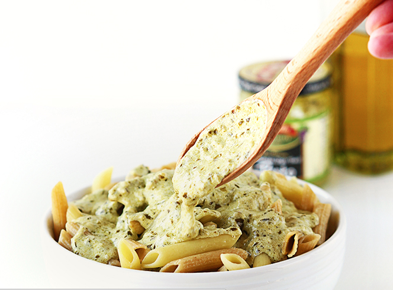

Step 2: In the same pan where you cooked the chicken, melt butter. Add garlic and saute 1-2 minutes until garlic is fragrant. Add flour and stir until a ball forms. Gradually whisk in half and half (or heavy cream) until mixture is smooth. Whisk in pesto. Continue to stir until mixture thickens.
